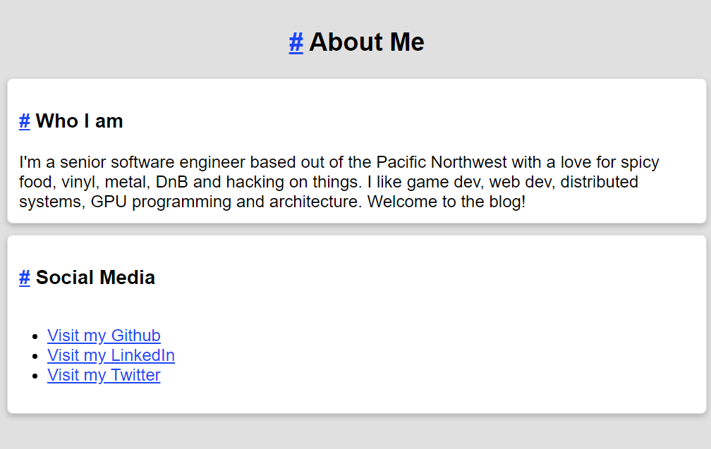

Wrapped up a rough version of the About Me page generation. This is slotted into the builder module as a standalone function that generates a page. I'll follow the same pattern for Index.html and the Projects pages.
// builder/about_me_page.rs
use crate::{
parser::{ContentIr, LinkType, Page},
Context, Item,
};
use std::sync::Arc;
pub fn build(context: &Arc<Context>) -> Page {
let about_me = ContentIr::section(
"Who I am".into(),
vec![ContentIr::Text {
text: context.config.about_me.clone(),
}],
);
let mut page_contents = vec![
ContentIr::title("About Me".into(), "aboutMe".into()),
about_me,
];
let mut important_links = vec![];
if let Some(github_url) = context.config.github.clone() {
important_links.push(ContentIr::Link {
description: "Visit my Github".into(),
link_type: LinkType::Regular,
url: github_url,
});
}
if let Some(linkedin_url) = context.config.linked_in.clone() {
important_links.push(ContentIr::Link {
description: "Visit my LinkedIn".into(),
link_type: LinkType::Regular,
url: linkedin_url,
});
}
if let Some(twitter_url) = context.config.twitter.clone() {
important_links.push(ContentIr::Link {
description: "Visit my Twitter".into(),
link_type: LinkType::Regular,
url: twitter_url,
});
}
if important_links.is_empty() == false {
page_contents.push(ContentIr::section(
"Social Media".into(),
vec![ContentIr::UnorderedList {
items: important_links,
}],
));
}
Page {
contents: Item {
location: None,
item: ContentIr::Div {
contents: page_contents,
},
},
file_name: "about_me.html".into(),
keywords: context.config.about_me_keywords.clone(),
summary: context.config.about_me_summary.clone(),
title: "About Me".into(),
}
}
I added a few helper functions to the ContentIr enum.
// parser/md/parse_contents/content_ir.rs
...
impl ContentIr {
pub fn section(header: String, mut contents: Vec<ContentIr>) -> Self {
contents.insert(
0,
Self::Header {
header_size: 3,
text: header.clone(),
id: format!("{}_headerId", header.to_lowercase().replace(" ", "")),
},
);
Self::Card(contents)
}
pub fn title(text: String, id: String) -> Self {
Self::Header {
header_size: 2,
text,
id,
}
}
}
...
Here's the final render:

Remaining on the list is:
I'm only concerned about the JS search. This will be a static site, and having to include the search info on every page will be insane. Perhaps I can link a JSON object instead of injecting it on every page?